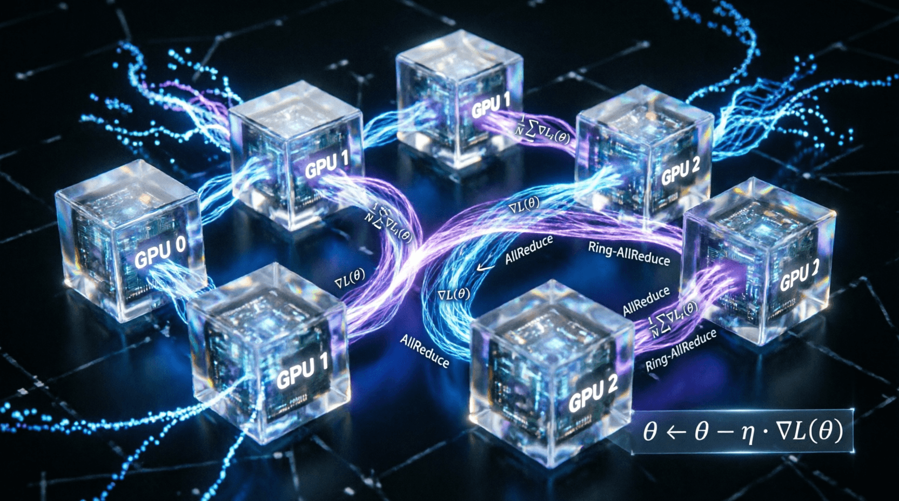

Урок 19: Стратегии генерации текста
ML-инженер • Блок 4: Масштабирование и инженерия LLM
На этапе инференса авторегрессионная языковая модель выдает вектор вещественных чисел (логитов) по всему словарю. Чтобы превратить их в финальный осмысленный текст, необходимо применить стратегии декодирования. Выбор правильного алгоритма сэмплирования определяет, будет ли ответ модели строгим и логичным или творческим, а также защищает текст от зацикливания.
Температура $T$ — это скалярный множитель, на который делятся логиты модели перед подачей в функцию Softmax. Она изменяет энтропию результирующего распределения:
Чтобы исключить из сэмплирования грамматически невозможные слова-аутсайдеры, применяется динамическая фильтрация:
Напишем низкоуровневую функцию фильтрации логитов для одного шага генерации.
import torch
import torch.nn.functional as F
def sample_next_token(logits, temperature=1.0, top_p=0.9):
# logits: тензор формы [Vocab_Size]
# Шаг 1: Применяем температуру
logits = logits / max(temperature, 1e-5)
# Шаг 2: Сортируем логиты по убыванию для расчета кумулятивной суммы
sorted_logits, sorted_indices = torch.sort(logits, descending=True)
# Шаг 3: Вычисляем кумулятивные вероятности после временного софтмакса
cumulative_probs = torch.cumsum(F.softmax(sorted_logits, dim=-1), dim=-1)
# Создаем маску для удаления токенов, чей вклад превышает порог top_p
sorted_indices_to_remove = cumulative_probs > top_p
sorted_indices_to_remove[1:] = sorted_indices_to_remove[:-1].clone()
sorted_indices_to_remove[0] = False
# Зануляем (заполняем -inf) исключенные логиты
indices_to_remove = sorted_indices[sorted_indices_to_remove]
logits[indices_to_remove] = float('-inf')
# Шаг 4: Повторно вычисляем софтмакс по отфильтрованным логитам и сэмплируем
probs = F.softmax(logits, dim=-1)
next_token = torch.multinomial(probs, num_samples=1)
return next_token.item()Если модель начинает повторять одну и ту же фразу, инженеры применяют модификацию логитов на основе истории генерации. Логиты токенов, которые уже встречались в сгенерированном тексте, принудительно уменьшаются на определенный коэффициент штрафа (например, делятся на 1.2), делая повторный выбор этих слов маловероятным.
Модифицируйте функцию sample_next_token. Добавьте в аргументы параметр repetition_penalty (по умолчанию 1.0) и список уже сгенерированных токенов generated_tokens. Реализуйте логику: если токен присутствует в истории, его исходный положительный логит должен быть поделен на коэффициент штрафа (а если логит отрицательный — умножен на него), прежде чем применится шаг температурного масштабирования. Протестируйте влияние штрафа, передав историю с частыми повторениями.
import torch
import torch.nn.functional as F
def sample_next_token_with_penalty(logits, temperature=1.0, top_p=0.9,
repetition_penalty=1.0, generated_tokens=None):
"""
Сэмплирование с поддержкой температуры, top-p и штрафа за повторения.
Args:
logits: [Vocab_Size]
temperature: температура softmax
top_p: порог ядерного сэмплирования
repetition_penalty: коэффициент штрафа (1.0 = без штрафа)
generated_tokens: список индексов уже сгенерированных токенов
"""
if generated_tokens is None:
generated_tokens = []
# ВАШ КОД ЗДЕСЬ:
# 1. Примените repetition_penalty к логитам для токенов из generated_tokens
# - Если логит > 0: logits[token_id] /= repetition_penalty
# - Если логит < 0: logits[token_id] *= repetition_penalty
# 2. Примените температуру: logits /= temperature
# 3. Примените top-p фильтрацию (как в уроке)
# 4. Сэмплируйте и верните следующий токен
pass
# Тестирование:
# mock_logits = torch.randn(1000)
# history = [42, 42, 42, 15, 15] # частые повторения
# next_id = sample_next_token_with_penalty(mock_logits, repetition_penalty=1.2, generated_tokens=history)import torch
import torch.nn.functional as F
def sample_next_token_with_penalty(logits, temperature=1.0, top_p=0.9,
repetition_penalty=1.0, generated_tokens=None):
if generated_tokens is None:
generated_tokens = []
# 1. Применяем repetition_penalty
if repetition_penalty != 1.0 and len(generated_tokens) > 0:
for token_id in set(generated_tokens): # set убирает дубликаты для скорости
if logits[token_id] > 0:
logits[token_id] /= repetition_penalty
else:
logits[token_id] *= repetition_penalty
# 2. Применяем температуру
logits = logits / max(temperature, 1e-5)
# 3. Top-P фильтрация
sorted_logits, sorted_indices = torch.sort(logits, descending=True)
cumulative_probs = torch.cumsum(F.softmax(sorted_logits, dim=-1), dim=-1)
sorted_indices_to_remove = cumulative_probs > top_p
sorted_indices_to_remove[1:] = sorted_indices_to_remove[:-1].clone()
sorted_indices_to_remove[0] = False
indices_to_remove = sorted_indices[sorted_indices_to_remove]
logits[indices_to_remove] = float('-inf')
# 4. Сэмплирование
probs = F.softmax(logits, dim=-1)
next_token = torch.multinomial(probs, num_samples=1)
return next_token.item()Правильная комбинация параметров критически влияет на качество вывода модели.
Приложение бесплатное. Было и останется.
Если проект помог вам или вашим близким — можете поддержать разработку добровольным переводом.
❤️ Спасибо за поддержку!
Перейти в каталог
